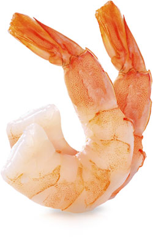

La calidad de nuestro camarón se debe a múltiples factores como: la alimentación, clima, técnicas de cosecha, tecnología de punta, investigación y desarrollo científico; obteniendo así un producto que cumple con las normas más exigentes de los mercados internacionales, como USA, la Comunidad Europea y China.
Los productos que ofrecemos tienen una total trazabilidad, comenzando desde la reproducción de las larvas, hasta el empaque, congelación y embarque; asegurando de esta manera tiempo de entrega, calidad y un producto fresco.
En la región se siembra de 8 a 15 larvas por metro cuadrado, es decir, aproximadamente 100.000 camarones por hectárea, esto permite que las larvas cuenten con más espacio para alimentarse y crecer; controlando de esta manera la proliferación de enfermedades con probióticos que mantienen las condiciones ideales en las piscinas para el cultivo del camarón, donde el carídeo gana tamaño y puede desarrollarse en las mejores condiciones; logrando de esta manera un óptimo crecimiento y uniformidad.

Descargar PDF de Tabla de Conversión del camarón Aquí